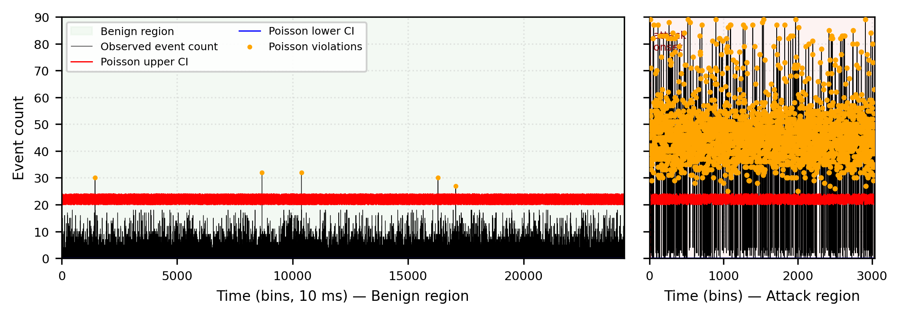

Research Problem
Anomaly detectors for dependable IoT systems face a practical gap: methods with formal false-alarm guarantees can be too slow for line-rate inference, while fast deployable methods such as autoencoders and isolation forests often rely on post-hoc threshold tuning without provable bounds.
This research addresses that gap for count-based network telemetry by developing a certified detector that combines formal false-positive control with real-time inference behavior.
Core Contribution
The work introduces a certified anomaly detection framework built on new concentration inequalities for weighted sums of independent Poisson random variables. These inequalities produce confidence intervals at a user-specified significance level and support anomaly scoring through normalized deviation from the certified interval.
The framework also includes a pre-deployment diagnostic based on the variance-to-mean ratio of benign counts, helping operators assess which protocol channels and bin widths are likely to produce tight bounds before deployment.
Key Results
- Achieved strong anomaly detection performance on the CIC IoT-DIAD 2024 dataset.
- Delivered certified false-positive guarantees through concentration-inequality-based confidence intervals.
- Demonstrated real-time suitability through lightweight count-based inference.
- Validated generalization on an independent IoT cybersecurity dataset.
Experimental Results
The detector was evaluated on CIC IoT-DIAD 2024, a benchmark dataset containing benign IoT traffic and multiple attack families. The evaluation compared the certified Poisson-CI detector against classical anomaly detection baselines under matched false-positive-rate settings.

Matched-FPR Performance Comparison: CIC IoT-DIAD 2024
| Method | ROC-AUC | F1 at matched 1% FPR | Interpretation |
|---|---|---|---|
| Poisson-CI | 0.9648 | 0.9708 | Certified detector with strong discrimination and formal false-positive control. |
| Isolation Forest | 0.5080 | 0.1554 | Fast unsupervised baseline, but without certified false-positive guarantees. |
| One-Class SVM | 0.7186 | 0.1811 | Kernel-based anomaly detector with heuristic thresholding and weaker matched-FPR performance. |
Cross-Dataset Validation
The detector was also evaluated on CICIoT2023 to test generalization beyond the primary benchmark. On volumetric attacks, it achieved F1 scores of 0.7957 on DDoS-TCP-Flood and 0.8112 on DoS-UDP-Flood, while maintaining a false-positive rate of 0.0126. The portfolio summarizes these results as external validation, while the full paper contains the detailed per-attack breakdown.
The results show that the certified detector achieved strong discrimination while preserving the interpretability and operational value of confidence interval-based anomaly detection.
Technical Approach
The detector converts raw IoT network traffic into count-based telemetry, estimates expected benign behavior, and uses certified confidence intervals to determine whether an incoming observation should be treated as anomalous.
1. Count-Based Telemetry
Network events are aggregated into short time windows and represented using protocol-aware count features such as total events, TCP, UDP, ICMP, and related traffic statistics.
2. Benign Rate Estimation
The system estimates expected benign traffic behavior from historical benign windows, producing local rate estimates that support interval construction.
3. Certified Intervals
Concentration inequalities for weighted Poisson sums are used to build confidence intervals around expected benign behavior at a user-specified significance level.
4. Anomaly Scoring
Incoming observations are scored by their normalized deviation from the certified interval. Values outside the interval indicate anomalous network behavior.
5. Pre-Deployment Verification
A variance-to-mean diagnostic helps assess whether protocol channels and time-window choices are likely to produce tight, reliable bounds before deployment.
Role and Contributions
I served as a co-author on this research in collaboration with Dr. Sana Spektor, Director of the Graduate Program in Data Analytics at Canisius University. My contributions spanned implementation, experimentation, evaluation, research communication, and manuscript preparation.
Research Implementation
Contributed to the development and testing of the certified anomaly detection pipeline, including feature construction, model execution, and experiment workflow support.
Experimental Evaluation
Supported dataset preprocessing, benchmark evaluation, matched-FPR comparisons, cross-dataset validation, and interpretation of performance results.
Figures, Tables, and Outputs
Helped prepare and verify experimental outputs, result summaries, figures, tables, and reproducibility materials used to support the submitted manuscript.
Manuscript Development
Contributed to manuscript review, technical refinement, result checking, and research communication for submission.
Research Artifacts
Supporting artifacts for this research include the submitted manuscript, experimental outputs, figures, and reproducibility materials. Public links will be added as they become available.
Submitted Manuscript
Full research paper describing the theoretical framework, certified detection pipeline, experiments, and evaluation results.
Submitted manuscriptExperimental Results
Evaluation outputs including performance metrics, matched-FPR comparisons, cross-dataset validation, and latency analysis.
Summarized on this pageReproducibility Package
Code, configuration files, and output logs supporting the experimental results and deployment pipeline.
Pending public release